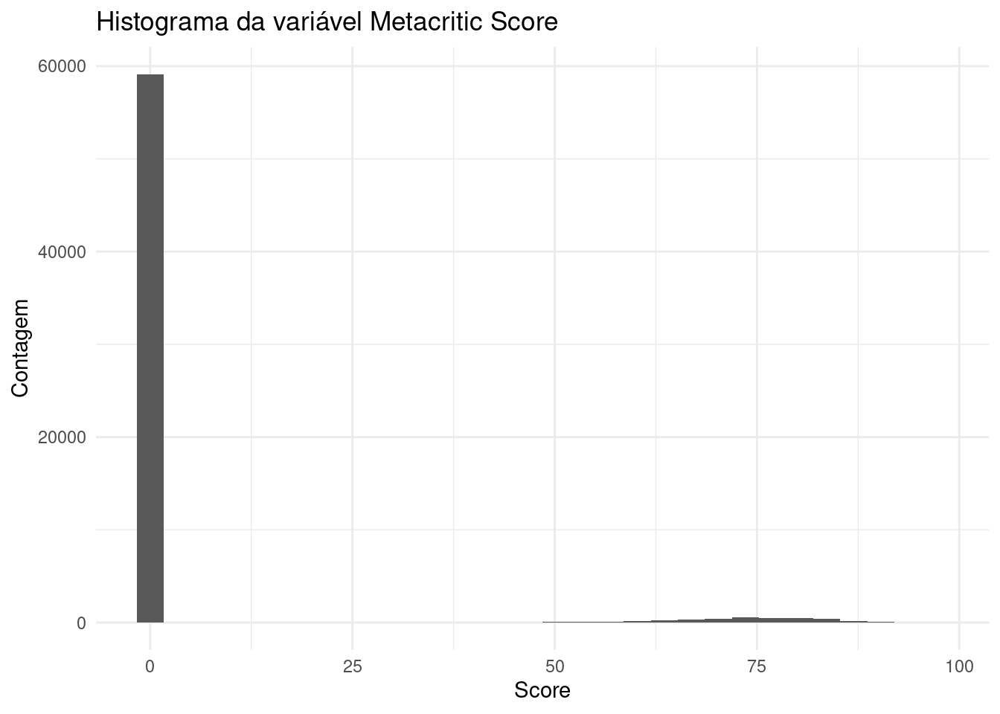
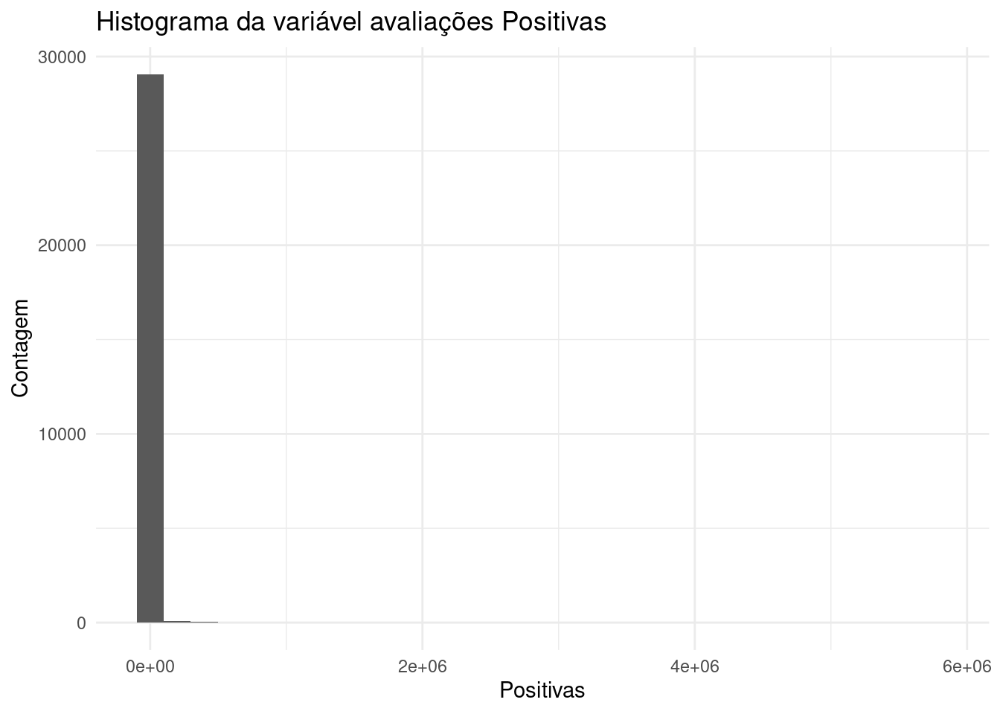

A ideia desta análise é ilustrar os conhecimentos adquiridos em R, passando pelos pontos de análise exploratória, construção de um dashboard para visualização de dados e por fim trabalhar com modelos de predição para alguns possíveis problemas da indústria.
Primeiro problema
Somos um estúdio de jogos e queremos analisar qual gênero/categoria de jogo tem mais sucesso na steam, mais público e melhores avaliações, também queremos analisar qual faixa de preço é mais interessante para o lançamento desse novo jogo.
Primeiro passo - Análise exploratória
Inicialmente iremos fazer uma análise exploratória de algumas bases de dados e suas variáveis que podem ser interessantes para determinar sucesso de um jogo, a faixa de preço, a quantidade de vendas e relacionar essas questões aos gêneros e categorias. Foram feitas análises de três bases de dados, a primeira mais completa, e as duas seguintes mais focadas em reviews de usuários.
Base de dados - 1
A base de dados usada para esta análise se encontra no Kaggle, através deste link:
mongo_db_user <- config::get("mongo_db_user", file ="config/config.yml")mongo_db_password <- config::get("mongo_db_password", file ="config/config.yml")mongo_db_url_extra <- config::get("mongo_db_url_extra", file ="config/config.yml")mongo_database <- config::get("mongo_database", file ="config/config.yml")mongo_collection <- config::get("mongo_collection_full", file ="config/config.yml")url_srv <-paste0("mongodb+srv://", mongo_db_user, ":", mongo_db_password, mongo_db_url_extra)mongo_db <- mongolite::mongo(collection = mongo_collection, db = mongo_database, url = url_srv, verbose =TRUE)## Lendo e criando um dataframe com os dados do mongoDBdf_full <-as.data.frame(mongo_db$find())
Found 1000 records...
Found 2000 records...
Found 3000 records...
Found 4000 records...
Found 5000 records...
Found 6000 records...
Found 7000 records...
Found 8000 records...
Found 9000 records...
Found 10000 records...
Found 11000 records...
Found 12000 records...
Found 13000 records...
Found 14000 records...
Found 15000 records...
Found 16000 records...
Found 17000 records...
Found 18000 records...
Found 19000 records...
Found 20000 records...
Found 21000 records...
Found 22000 records...
Found 23000 records...
Found 24000 records...
Found 25000 records...
Found 26000 records...
Found 27000 records...
Found 28000 records...
Found 29000 records...
Found 30000 records...
Found 31000 records...
Found 32000 records...
Found 33000 records...
Found 34000 records...
Found 35000 records...
Found 36000 records...
Found 37000 records...
Found 38000 records...
Found 39000 records...
Found 40000 records...
Found 41000 records...
Found 42000 records...
Found 43000 records...
Found 44000 records...
Found 45000 records...
Found 46000 records...
Found 47000 records...
Found 48000 records...
Found 49000 records...
Found 50000 records...
Found 51000 records...
Found 52000 records...
Found 53000 records...
Found 54000 records...
Found 55000 records...
Found 56000 records...
Found 57000 records...
Found 58000 records...
Found 59000 records...
Found 60000 records...
Found 61000 records...
Found 62000 records...
Found 63000 records...
Found 63210 records...
Imported 63210 records. Simplifying into dataframe...
skimr::skim(df_full)
Data summary
Name
df_full
Number of rows
63210
Number of columns
39
_______________________
Column type frequency:
character
20
logical
3
numeric
16
________________________
Group variables
None
Variable type: character
skim_variable
n_missing
complete_rate
min
max
empty
n_unique
whitespace
Name
0
1
0
137
1
62768
0
Release date
0
1
8
12
0
3956
0
Estimated owners
0
1
5
21
0
14
0
About the game
0
1
0
25695
1730
61175
0
Supported languages
0
1
2
1216
0
8760
0
Full audio languages
0
1
2
1216
0
1750
0
Reviews
0
1
0
2911
54336
8789
0
Header image
0
1
72
90
0
63107
0
Website
0
1
0
183
30735
26826
0
Support url
0
1
0
349
30225
21902
0
Support email
0
1
0
169
9631
31932
0
Metacritic url
0
1
0
142
59456
3661
0
Notes
0
1
0
1391
54646
7079
0
Developers
0
1
0
584
1757
37992
0
Publishers
0
1
0
164
1963
32668
0
Categories
0
1
0
371
2646
5019
0
Genres
0
1
0
236
1738
2109
0
Tags
0
1
0
288
8929
47600
0
Screenshots
0
1
0
22691
920
62188
0
Movies
0
1
0
3687
4192
58953
0
Variable type: logical
skim_variable
n_missing
complete_rate
mean
count
Windows
0
1
1.00
TRU: 63185, FAL: 25
Mac
0
1
0.22
FAL: 49605, TRU: 13605
Linux
0
1
0.15
FAL: 54020, TRU: 9190
Variable type: numeric
skim_variable
n_missing
complete_rate
mean
sd
p0
p25
p50
p75
p100
hist
AppID
0
1
1084383.29
531161.77
10
650982.50
1069680.00
1526150.00
2140820
▅▇▇▇▅
Peak CCU
0
1
112.55
4665.54
0
0.00
0.00
1.00
825215
▇▁▁▁▁
Required age
0
1
0.36
2.42
0
0.00
0.00
0.00
21
▇▁▁▁▁
Price
0
1
7.25
10.99
0
0.99
4.99
9.99
999
▇▁▁▁▁
DLC count
0
1
0.67
15.89
0
0.00
0.00
0.00
2366
▇▁▁▁▁
Metacritic score
0
1
4.32
17.38
0
0.00
0.00
0.00
97
▇▁▁▁▁
User score
0
1
0.05
2.03
0
0.00
0.00
0.00
100
▇▁▁▁▁
Positive
0
1
1257.10
28244.07
0
2.00
12.00
75.00
5764420
▇▁▁▁▁
Negative
0
1
204.66
5298.19
0
0.00
4.00
23.00
895978
▇▁▁▁▁
Achievements
0
1
23.29
197.50
0
0.00
3.00
20.00
9821
▇▁▁▁▁
Recommendations
0
1
1009.57
20737.06
0
0.00
0.00
0.00
3441592
▇▁▁▁▁
Average playtime forever
0
1
134.21
1309.27
0
0.00
0.00
0.00
145727
▇▁▁▁▁
Average playtime two weeks
0
1
12.39
215.67
0
0.00
0.00
0.00
19159
▇▁▁▁▁
Median playtime forever
0
1
120.22
1747.66
0
0.00
0.00
0.00
208473
▇▁▁▁▁
Median playtime two weeks
0
1
13.26
234.06
0
0.00
0.00
0.00
19159
▇▁▁▁▁
Score rank
63168
0
98.90
0.88
97
98.00
99.00
100.00
100
▁▆▁▇▆
## Usaremos a função do Janitor para editar os nomes das colunas e torná-las mais fáceis de serem manipuladas## E então faremos a seleção das colunas que serão analisadasdf_selected <- df_full |> janitor::clean_names() |> dplyr::select(app_id, name, developers, publishers, categories, genres, tags, release_date, estimated_owners, peak_ccu, price, windows, mac, linux, metacritic_score, user_score, positive, negative, recommendations, average_playtime_forever, median_playtime_forever, average_playtime_two_weeks, median_playtime_two_weeks) |> dplyr::mutate(release_date = lubridate::mdy(release_date))
Removendo Softwares e não jogos
Após a análise inicial, foi detectado que existiam nesta base de dados softwares que não eram considerados jogos, portanto eles serão excluídos para que não comprometam as futuras análises.
Vamos utilizar a variável genres para identificar os gêneros que não são jogos.
# ## Colunas categories, genres, separando em linhas# df_selected <- df_selected |># tidyr::separate_rows(categories, sep = ",") |> # tidyr::separate_rows(genres, sep = ",")notGames <-c("Utilities", "Design & Illustration", "Animation & Modeling", "Game Development", "Photo Editing", "Audio Production", "Video Production", "Accounting", "Movie", "Documentary", "Episodic", "Short", "Tutorial", "360 Video")# unique(df_selected$genres)df_selected_gen <- df_selected |> dplyr::filter(!(genres %in% notGames))## Esses eram dois jogos que foram investigados## Eles possuíam categorias Movie e Documentary também, então esses registros foram apagados e os demais foram mantidos# df_full_search <- df_full |> # dplyr::filter(Name %in% c("Spacelords", "CAT SUDOKU🐱"))
Escolhendo as variáveis
Após uma análise inicial das tabelas geradas pelo skimr, selecionei algumas variáveis que seriam analisadas mais profundamente. A começar pelas variáveis relativas a notas, críticas e avaliações dos jogos.
`stat_bin()` using `bins = 30`. Pick better value with `binwidth`.

Pelo Histograma podemos ver que a variável Metacritic Score (renomeada para metacritic_score) não é muito interessante, seu preenchimento foi visto como completo pelo skim, porém quase em sua totalidade as notas são “0”, ou seja, não temos uma nota definida para avaliar os jogos.
Outras variáveis de avaliação como Reviews, User Score, e Recommendations, foram analisadas porém apresentaram pouco úteis, ou por terem um preenchimento muito baixo ou por envolverem outros tipos de dados (que não fossem uma avaliação direta).
Nova métrica de avaliações
A única métrica que parece interessante de avaliação dos jogos, é a de avaliações positivas e negativas (as variáveis Positive e Negative).
Para isso foi criado uma nova variável, que mede a taxa de avaliações positivas e negativas de um jogo, chamada overall_rate.
[1] 0.5454545 10.6000000 NaN Inf 6.2500000 1.7755102
[7] 3.0000000 NaN 12.6666667 5.0000000 2.7783019 2.5344828
[13] Inf 3.2727273 20.0000000 2.6044776 Inf 17.0500000
[19] NaN 3.0000000 2.1034483 1.0357143 3.6519608 0.4000000
[25] 6.8771930 1.6818182 0.3600000 9.5000000 4.8000000 NaN
[31] 1.2777778 2.0000000 1.6000000 1.5542169 Inf 3.5000000
[37] 2.0000000 4.3750000 2.3947681 4.3076923 0.6043956 2.7324841
[43] NaN 3.4384236 1.6428571 1.0000000 3.9792771 0.6666667
[49] 1.3043478 7.0000000 Inf NaN NaN 1.0000000
[55] 6.0000000 4.0588235 8.1178536 0.1176471 1.5000000 Inf
[61] 0.0000000 3.0760870 3.5000000 1.2964427 Inf 8.5421903
[67] Inf Inf 6.6666667 NaN 31.9863760 NaN
[73] 8.5000000 Inf 3.5000000 0.6666667 NaN 2.3846154
[79] NaN Inf 0.3846154 0.0000000 5.0000000 5.0000000
[85] Inf 0.5000000 9.3333333 3.1875000 2.1122449 Inf
[91] NaN 4.8888889 8.7128310 3.1818182 NaN 27.5056403
[97] 1.0000000 Inf 3.5000000 Inf
Analisando essa nova métrica, verificamos que possuímos dados NaN e Inf, que são resultados, respectivamente, de divisões \(0/0\) e de um número número qualquer por zero \(x/0\). Os números NaN serão removidos, já que não serão úteis para avaliação dos jogos, já os números Inf e números muito grandes serão investigados mais a fundo.
Warning: There was 1 warning in `dplyr::mutate()`.
ℹ In argument: `release_date = lubridate::mdy(release_date)`.
Caused by warning:
! All formats failed to parse. No formats found.
`stat_bin()` using `bins = 30`. Pick better value with `binwidth`.

E então
Base de dados - 2
Como os dados de avaliações eram escassas e eu já havia encontrado outras bases de dados, decidi analisar outras bases e verificar se possuía outra que fosse mais interessante com propósito de verificar dados de avaliação dos jogos.
Após uma investigação da base, verifiquei que ela era um pouco antiga, por não possuir títulos como o “Counter-Strike: Global Offensive”, portanto deixei ela de lado e parti para a análise da outra base de recomendações.
Após a análise desta nova base de dados, concluí que ela possui sim dados mais atualizados de jogos (com jogos datados de fev/2023), mas possui menos dados relacionados a línguas suportadas (tanto legendas quanto áudios), dados de pico de usuários, dados de DLC, dados de empresas (como sites, e-mail de suporte, imagem do jogo), dados do Metacritic (por mais que não tenham sido úteis) e dados de tempo de jogo. Então utilizarei ela apenas para verificar a avaliação dos usuários (através das colunas positive_ratio e user_reviews).